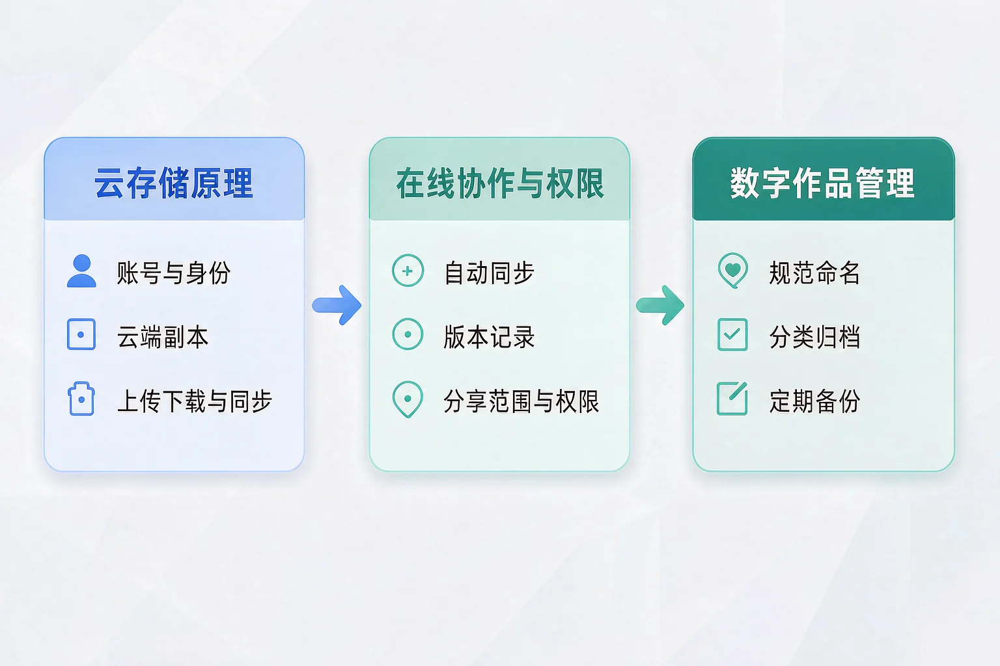
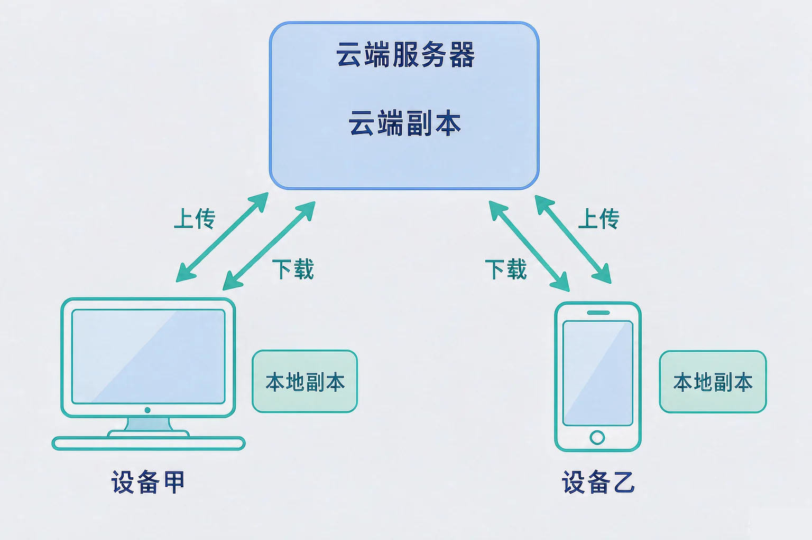
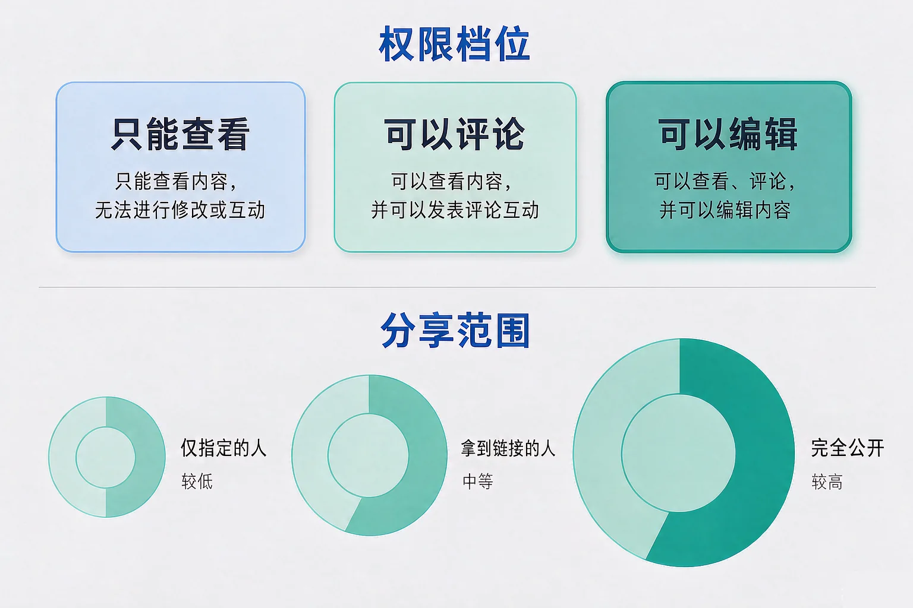

Gallery
v1.0.0 · skill v7.22.0
初中七年级 · 互联网应用与创新
同一份文件，几个人同时在改，为什么有的改动留下了、有的却不见了？

选一个你真正好奇的问题，后面的实验都会围着它转。
选择或输入后，这节课会围绕你的问题展开。
先凭直觉选一个，选完立刻看到解释——错了也没关系，正好知道要重点听哪里。
1. 「上传」和「下载」这两个动作，方向分别是：
上，是往云端去；下，是从云端回来。错因提醒：把上传和下载的方向搞反，是这一课最常见的错误，记住「上」对应的方向是往上送出去。
2. 把文件保存到云端之后，本地的那份文件会怎么样？
云存储是在云端多放一份副本，不是把本地的那份搬走。两份保持一致，靠的是同步。
3. 小组四个人同时改一份在线文档，最需要提前说清楚的是：
这个问题先记在心里，等一下做同步实验时，你会看到没有分工和权限约定会发生什么。
为什么要学这一课？你已经知道互联网是由许多网络互联而成的，数据可以在设备之间传输。但传过去的文件存在哪里，谁说了算？所以我们需要弄清云存储的工作方式，才能安全地存放和取用自己的数字作品。
账号
账号决定你是谁，也决定你能看到哪些文件。账号一旦泄露，你的文件就不再只属于你。
云端副本
放在网络服务器上的那一份，是大家公认的权威版本；本地只是它的一个副本。
同步
自动做两件事：把本地改动送上去，把云端更新取下来，让两边尽量一致。

🔍 深层理解 换个角度再看一遍这件事，看看能不能说出背后的原理。
看见它：同一份文件，在手机、平板、教室电脑上各有一个副本，改动却能互相同步——背后是云端那一份在当中转。
解释它：为什么云存储能防丢失？因为云端服务器通常会把数据复制到多处保存。这属于「冗余」，代价是需要更多存储空间。
迁移它：同步的思路不止用在文件上：浏览器的书签、笔记应用的记录，都是同一套「一份权威数据 + 多份副本」的模型。
左边是你手里这份，右边是云端那份。先自己改一处，再让同伴在云端改一处，然后试着上传，看看会发生什么。
两样东西维持秩序。第一是自动同步与版本记录：每次保存都留下一条历史，写错了可以回头看、往回转。第二是权限设置：决定谁能看、谁只能评论、谁可以改。
只能查看
能读，不能改。适合发给需要了解情况的人。
可以评论
能读，能留建议，不能直接改正文。适合征求意见。
可以编辑
能直接改正文，改动会进入版本记录。适合同组同学。

易错点：只想着给权限，忘了想范围。「拿到链接的人」和「完全公开」看起来很省事，但链接一旦被转发出去，范围就失控了。涉及个人信息、成绩、联系方式的内容，分享范围必须收在「仅指定的人」。
先选一个权限档位，再选一个分享范围，看看查看、评论、编辑、转发这四件事分别会发生什么。
题目：小组四人合作写实验报告。第二天打开文件，昨天写好的两段不见了。文件没有报错，容量也变小了。请分析原因并提出改进办法。
第一步 看清现象：内容少了，但文件能正常打开，说明不是文件损坏。
第二步 找出原因：两个人在各自设备上各改了一版。甲先上传到云端，乙手里还是旧副本，乙一上传，旧副本把甲那一版整个替换掉了。
第三步 判断性质：这是版本覆盖，不是丢失。云端和本地都存在过旧版本，只是没人发现。
第四步 给出对策：动手前先同步一次；看到冲突提示不要强行覆盖，先比较两版再合并；更稳妥的是分工到不同章节，各自只改自己那一段。
不少同学误认为「上传」总是安全的，只有「下载」才会覆盖别的东西。事实是：上传和下载都会覆盖，只是方向相反。上传覆盖的是云端，下载覆盖的是本地。真正安全的做法不是回避这两个动作，而是动手之前先看清版本，两边都有改动时先合并。
先凭直觉选一个，选完立刻看到解释——错了也没关系，正好知道要重点听哪里。
1. 关于云存储，下面哪句话是正确的？
云存储是「多一份副本」，不是「搬家」。错因提醒：很多同学把上传误认为搬迁，其实本地那份通常还在。另外，云端安全不等于账号安全，账号泄露照样会出事。
2. 你在本地改了文件，同时同伴也在云端改了同一份文件。这时最合适的做法是：
两边都有改动时，直接上传一定覆盖掉另一方。错因提醒：把「版本冲突」误认为「文件出错」是常见错误，其实它是提示你要先合并，而不是提示文件坏了。
3. 要发一份还没定稿的小组草稿给组内同学补充意见，最合适的分享设置是：
范围收在名单内，权限刚好够用，既方便又安全。公开或链接分享会让范围失控。错因提醒：只盯着权限档位、忘了看分享范围，是最容易被忽略的常见错误。
规范的文件名，应该让人不看内容就知道「什么时候、什么主题、第几版」。输入你平时用的文件名，看看能得几分。
再写一条你自己的规则：除了日期、主题、版本，你觉得小组文件还应该约定什么？写在下面，说明它是为了防止什么问题。
先凭直觉选一个，选完立刻看到解释——错了也没关系，正好知道要重点听哪里。
1. 同学把一份班级通讯录的分享链接发到了大群里，链接范围是「拿到链接的人」。最可能的风险是：
「拿到链接的人」这个范围没有边界，转一次就多一圈人。通讯录属于他人个人信息，分享范围必须收在「仅指定的人」。错因提醒：误认为「有链接才能看」就等于安全，是最常见的判断失误。
2. 误删了一份云端文件，最先应该做的是：
云存储通常保留回收站和版本历史，误删和改错大多可以恢复。错因提醒：误认为删掉就彻底没了，于是重做一遍，白白浪费时间。
3. 小组合作写一份报告，为了减少互相覆盖，最有效的做法是：
分工加同步，是减少版本冲突最直接的办法。它靠的是约定，而不是指望技术自动解决一切。
回到开头那起事故：两段内容没有消失，是被旧版本覆盖了。如果当时动手前先同步一次，或者分工到不同章节，这场事故根本不会发生。技术给了我们方便的协作方式，而用得对，靠的是约定和规范。
给别人讲一遍：请用「云端副本、同步、版本冲突、分享范围」这四个词，说清楚这次事故是怎么发生的、以后怎么避免。
三层练习，做完第一、二层就算通关；第三层留给愿意继续探索的同学。
⭐ 基础巩固（必做）
⭐⭐ 能力应用（必做）
⭐⭐⭐ 迁移挑战（选做）
左边是学它之前要先会的，右边是学会之后可以继续探索的，下面是同一领域的伙伴知识。
图谱正在加载：首次进入需下载知识索引（约 1–3 秒），加载完成后本行会自动消失。